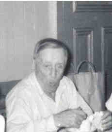

 Frederick HUMM (1881-1973) |
Frederick HUMM
• He appeared in the 1920 census on 22 Jan 1920 in Pittsburgh, Allegheny, PA. 6 • He appeared in the 1930 census on 15 Apr 1930 in Pittsburgh, Allegheny, PA. 1 • He appeared in the 1940 census on 5 Apr 1940 in Pittsburgh, Allegheny, PA. 8 • He appeared in the 1950 census on 6 Apr 1950 in Pittsburgh, Allegheny, PA. 9 Frederick married Rose M. HOEY, daughter of Nicholas HOEY and Rose Ann QUINN, about 1917.1 (Rose M. HOEY was born on 22 Jul 1885 in Pittsburgh, Allegheny, PA,4 5 10 died on 6 Sep 1960 in Pittsburgh, Allegheny, PA 4 5 10 and was buried on 10 Sep 1960 in Calvary Cemetery, Pittsburgh, Allegheny, PA 7 10.) |
1 Pennsylvania, Allegheny County, 1930 U.S. Census, Population Schedule (Washington, D.C., National Archives and Records Administration), ED 2-38, Sheet 14, Line 51.
2 National Archives and Records Administration., Selective Service Registration Cards, World War II: Fourth Registration. (Washington, D.C.).
3 Social Security Administration, Death Master File (http://www.ancestry.com/search/rectype/vital/ssdi/main.htm).
4 Funeral Home, Mass Card (Obtained from Rosemary (Weet) Hoey).
5 Thomas Hoey, Cemetery Headstone, Calvary Cemetery (Pittsburgh, PA, May 1999).
6 Pennsylvania, Allegheny County, 1920 U.S. Census, Population Schedule (Washington, D.C., National Archives and Records Administration), ED 360, Sheet 12, Line 100.
7 Calvary Cemetery, Cemetery Records (Pittsburgh, PA, 22 Oct 1999).
8 Pennsylvania, Allegheny County, 1940 U.S. Census, Population Schedule (Washington, D.C., National Archives and Records Administration), ED 69-63, Sheet 1, Line 42.
9 Pennsylvania, Allegheny County, 1950 U.S. Census, Population Schedule (Washington, D.C., National Archives and Records Administration), ED 77-83, Sheet 2, Line 6.
10 Commonwealth of Pennsylvania, Department of Health, Bureau of Vital Statistics, Pennsylvania Death Certificates, 1906-1970 (Harrisburg, PA (via Ancestry.com)), Rose M. Humm (filed 9 Sep 1960).
Home | Irish Roots | Name List